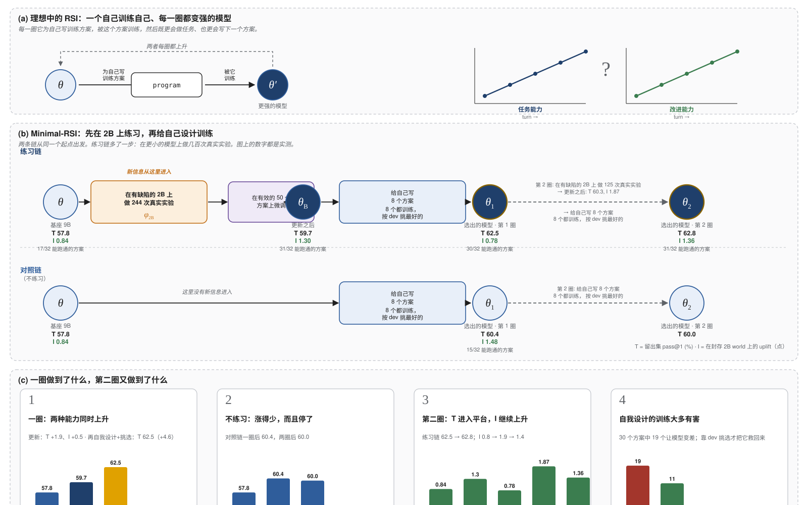
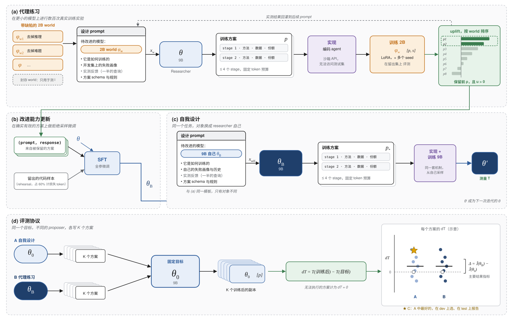

Technical report
Minimal-RSI：在更小的模型上练习，能让模型更擅长改进自己吗？
一个最小的、每一步都真实执行的递归自我改进闭环——9B 模型为 2B 模型设计训练，在真实结果上学习，再为自己设计训练——以及它给出的答案。
想验证的事：一个模型能不能通过"练习改进更小的模型"，学会改进自己——改进能力和任务能力一起涨。
做法：让 9B 在带缺陷的 2B 上做几百次真实训练实验，把有效的经验学进去，然后让它给自己设计训练；另一条链不练习，直接给自己设计训练，作对照。
结果：一圈下来，练过的 9B 两种能力都升了，自我设计加挑选到 62.5%（基座 57.8，不练习 60.4）。但第二圈两条链都不再涨；自我设计的方案多数有害，是"挑选"救了它。没有外部输入，闭环只转一圈。

§怎么读这些数字
- T（任务能力）：模型自己做 127 道留出编程题的 pass@1，百分数。一次测量的噪声约 ±1.5 分，所以 1 分以内的差别不要当真。
- I（改进能力）：让模型给两个它从未见过缺陷类型的 2B 写训练方案，真的训、真的测，方案带来的平均提升（百分点）。只算跑通的方案，所以要同时看"能跑通的方案"有几个——对照链第 1 圈的 I = 1.48 看着高，但 32 个方案只有 15 个合法；按跑不通计 0，它是 0.60，练习链的头是 0.73。
- dev / hidden：挑方案只看 dev（开发集），报告分数只看 hidden（留出集）。两者的差距变大，就是在"背题"。
- 圈：练习 → 更新 → 自我设计 → 挑选，算一圈；选出的模型是下一圈的起点。
Abstract
递归自我改进（RSI）大多只在无法做受控实验的规模上被讨论。我们提出 Minimal-RSI：一个小型系统，RSI 的定义性闭环在其中被真实地执行——语言模型为某个模型设计训练方案，方案被执行，效果被测量，模型在有效的方案上接受训练，随后为自己设计训练并接受这次训练。系统只用一个模型家族（9B 的 researcher 与 2B 的代理模型）、仅监督微调、8 张 40GB GPU。我们测量了闭环完整的两圈。researcher 在带缺陷的 2B checkpoint 上进行 244 次真实训练实验（976 次代理训练），在有效的方案上接受微调，rehearsal 取自它自己验证过的采样。这一次更新同时提高两种能力：在缺陷类型从未见过的封存代理任务上，改进能力从 +0.8 升到 +1.3 个 uplift 点，自身在留出的 LiveCodeBench 题目上的 pass@1 上升 +1.9；剂量对齐的对照表明前者来自改进经验、后者来自 on-policy rehearsal。更新后的 researcher 为自己设计训练并按开发集选择，达到 62.5% 的 pass@1，比基座高 4.6 个点、比不经练习的同一流程高 2.1 个点。第二圈两条链的任务能力都进入平台，改进能力则每次更新都升、每次自训练都降。在全部条件下，自我设计的训练多数情况下降低目标模型，而成功的方案可由开发集预测（r = 0.79）：在这个规模上，可靠的增益来自练习加上在模型自己的设计中做选择。
§核心发现
- 一次更新，两种能力同步上升。 在 2B 代理上练习、再以 on-policy 更新巩固，researcher 的改进能力与任务能力在同一步里同时提高；自我设计加选择随后到达 62.5%（+4.6）。
- T 来自 rehearsal，I 来自改进经验。 同一更新去掉改进样本：T 上升同样多，I 不升、32 个提案只有 4 个能执行。改用其他模型的解答做 rehearsal：T 掉 15 个点。
- 自我设计多数有害，但可预测。 30 个自我设计方案中 19 个降低目标模型；dev 与 hidden 分数相关 r = 0.79。在这个规模上，选择比学习设计更值钱。
- 没有外部输入，闭环只转一圈。 对照链一次 +2.5 后停住；练习链中外部实验喂养的 I 持续上升（0.84 → 1.87），无外部输入的 T 与对照链一起进入平台。改进的速率等于新信息进入闭环的速率。
1问题
当改进一个系统的过程本身是该系统的产物、并随系统变强而变好时，这个系统在递归地改进自己。对语言模型而言，这个过程是训练；研究对象因此是一个决定模型（包括它自己）如何被训练、并且决定随经验而改善的模型。在前沿规模上，这件事昂贵且难以控制。我们转而寻找最小的设定，让闭环的每一步都真实发生，从而可以直接检验它所依赖的假设。
我们采用三条操作性要求。R1 改进算子（训练方案）由模型产生，而非实验者固定的配方；R2 产生方案的能力从方案被真实执行后的测量效果中习得，而非来自学出来的奖励模型或自我评价；R3 任务能力 T 与改进能力 I 分开测量，使"闭环在运行"不被误当成"有所改进"。R2 需要大量真实结果，而训练模型自身是它能做的最昂贵的实验——于是让它在同一家族更小的模型上练习。由此引出本文的问题：改进小代理模型的本领，能否迁移到改进自己？
2方法
- a代理练习。 researcher θ 读入一个带缺陷的 2B world 的失败画像，写训练方案；编码 agent 实现，2B 真实训练 4 个 seed、在留出集打分，方案在 world 内按 uplift 排序。
- b改进能力更新。 θ 在排名前 25% 方案的原始 (prompt, response) 上做拒绝采样微调，混入 60% 的 rehearsal——模型自己在 train 上采样、通过测试的解答——得到 θ_B。
- c自我设计。 θ_B 在同一个 prompt 模板下、以自己为对象写方案，方案作用于自身权重。
- d评测协议。 固定目标 θ₀；θ₀ 与 θ_B 各写 K = 8 个方案，全部真实训练，比较 dT 的分布。C = θ₀ 的方案中按 dev 选出的最佳；B self：θ_B 给自己设计。

度量。T(θ) 是留出集上的 pass@1（avg@4，温度 0.8，4–8 次独立评测取平均）。方案 p 在 world w 上的 uplift 是 2B 后代的 pass@1 减去 parent 的（8 次评测均值）。I(θ) 是 θ 在封存 world 上所提方案的平均 uplift，封存 world 的缺陷类型在练习中从未出现。dT(p) = T(用 p 训练后的目标) − T(目标)，无法执行的方案记 0。迁移指标 Δ = mean dT(B) − mean dT(A)，z ≥ 2 视为支持，规则与 K = 8 在运行前固定。
| 模型 | Qwen3.5-9B（researcher）/ Qwen3.5-2B（代理）；非思考模式；实现 agent 在所有条件下相同 |
|---|---|
| 数据 | LiveCodeBench v6：train 380 / dev 126 / hidden 127，按难度分层、互不相交；另 422 题时间外推集只用于一次检验 |
| World | 6 个 rollout（3 种缺陷 × 2 seed）+ 2 个封存（第 4 种缺陷，练习中从未出现） |
| 代理练习 | 244 个互不相同的方案，4 seed，每 world 取前 25%；奖励信度 0.62–0.89（5/6 world） |
| 9B 训练 | 8 卡 FSDP 全参，fp32 master，lr 2·10⁻⁶；更新 1 epoch；自我设计预算 24 万 token |
| 算力 | 8× A100-40G；A 19.7 GPU·h，B 42.2（代理练习 22.0），C 零额外 |
3结果
3.1 一圈闭环：改进能力与任务能力同步上升
| checkpoint | T（留出集 pass@1） | I（封存代理 world） | 有效方案 |
|---|---|---|---|
| θ₀，基座 | 0.5785 ± 0.0049 | +0.0084 ± 0.0042 | 17 / 32 |
| θ_B，代理练习 + 更新之后 | 0.5972（+1.9） | +0.0130 ± 0.0022 | 31 / 32 |
| θ_B 自我设计、按 dev 选出 | 0.6245（+4.6） | — | — |
| 对照：同一更新、只有 rehearsal | 0.6034（+2.5） | +0.0059 ± 0.0030 | 4 / 32 |
在两个缺陷类型从未在练习中出现的封存 world 上，θ_B 的方案 97% 有效（基座 53%，Fisher p < 0.001），打分方案的平均 uplift 从 +0.0084 升到 +0.0130（26 个中 22 个为正）。researcher 自身的任务能力上升 +1.9 个点。剂量对齐的对照把两种效应分开：同样大小、只用 rehearsal 的更新让 T 上升同样多（+2.5），但 I 停在 +0.6、32 个提案只有 4 个能执行——T 的增益来自 on-policy rehearsal，I 的增益来自改进经验。θ_B 随后为自己设计八个方案，按开发集选出的那个到 0.6245。

3.2 练习是否改善自我设计
| 条件 | proposer → target | 成功执行 | 平均 dT ± s.e. | dT > 0 | dev 选出的（test dT） |
|---|---|---|---|---|---|
| A 自我设计 | θ₀ → θ₀ | 8 / 8 | −0.0260 ± 0.0115 | 2 / 8 | +0.0253（C） |
| B 代理练习 | θ_B → θ₀ | 6 / 8 | −0.0127 ± 0.0124 | 3 / 8 | −0.0111 |
| B self | θ_B → θ_B | 8 / 8 | −0.0079 ± 0.0120 | 4 / 8 | +0.0273（T = 0.6245） |
迁移（B vs A）：Δ = +0.0133 ± 0.0169，z = 0.79。更新后的 researcher 为基座目标写的方案平均损害更小，方向符合假设，但差异未达判据；区间排除了超过约 4.6 个点的迁移效应。为自己设计时，θ_B 的方案平均 −0.8（基座 A 组 −2.6），选出的最佳比 C 高 2.1 个点。
两个分布的特征比它们的差值更重要。自我设计的训练大多有害：30 个成功执行的方案里 19 个降低目标模型，条件内离散度是条件间差异的两到三倍。好方案可以事先识别：22 个以 θ₀ 为目标的 checkpoint 上，dev 与 hidden 分数相关 r = 0.79，所以 dev 选择在每个条件下都能找回真实的增益。

更多数据：消融、时间泛化、方案构成、奖励信度
3.3 消融：rehearsal 的来源决定更新是有益还是毁灭性的
| rehearsal | 更新后 T | ΔT | 更新后 I | 迁移 Δ vs A |
|---|---|---|---|---|
| 其他模型的解答（解答池） | 0.4282 | −0.150 | +0.0157 | +0.003（z = 0.2） |
| 自己验证过的采样 | 0.5972 | +0.019 | +0.0130 | +0.013（z = 0.8） |
rehearsal 取自解答池时，同一次更新让 researcher 损失 15 个点的任务能力，受损模型的设计与基座无法区分；权重精度只占其中 3 点，其余来自数据。对一个后训练模型而言，其他模型的解答本身就是分布偏移；on-policy rehearsal 让更新能携带改进经验而不付出这个代价。
3.4 第二圈：任务能力进入平台，改进能力锯齿上升
| 圈 | 练习链 | 对照链（只有自我设计 + 选择） |
|---|---|---|
| 0 | 57.85 / — / I 0.84 | 57.85 / — / I 0.84 |
| 1 | 62.45 / 64.19 / I 0.78 | 60.38 / 60.72 / I 1.48 |
| 2 | 62.80 / 63.89 / I 1.36 | 59.99 / 61.41 / — |
两条链各从 dev 选出的第 1 圈头出发再跑一圈。练习链的更新把 I 推到 1.87（全研究最高），T 则下降 2.2 个点；它的八个自我设计方案是所有条件中最温和的（4/8 为正，最差 −1.1），dev 选出的头到 62.80。对照链的八个方案没有一个为正、其中一个把模型打到 2% 的 pass@1，dev 选择把它排除，新头 59.99。两圈之后两条链相差 2.8 个点（dev 2.5），但第二圈两条链在任一 split 上都没有增益。I 与 T 的行为不同：每次更新都提高它（+0.46、+1.09），每次自训练都降低它（−0.52、−0.51）。

更多数据：泛化到更晚的题目
3.5 泛化到更晚的题目
在 422 题的时间外推集上（题目晚于全部训练数据），T(θ₀) = 0.333，不经练习的 C = 0.351（+1.8），练习链第 1 圈的头 = 0.351（+1.8）。dev 选择找到的增益不局限于留出集的时间窗口；练习链在留出集上 2.1 个点的优势在更晚的题目上没有再现。
4分析
信息从哪里来，为什么会平台
没有外部输入的自我改进是压缩，不是扩展。两条链只差一件事：圈与圈之间有没有新信息进入。对照链没有——模型自己写方案、在自己的验证样本上训练、在固定的开发集上被选择——它移动了一次（+2.5）就停下；这一次增益正是封闭闭环所能产生的那一种：把 pass@k 压成 pass@1，剂量对齐的纯 rehearsal 更新不需要任何设计就得到同样的 +2.5。练习链有一个外部输入——真实代理实验的结果——这个输入喂养的能力持续上升（I：0.84 → 1.30 → 1.87），它不喂养的能力则与对照链一起进入平台（T：62.5 → 62.8）。限制 T 的不是 researcher，而是任务环境里固定的信息量。模型仅凭自己的输出改进自己——"左脚踩右脚"——无法持续；持续的自我改进需要一条让模型推导不出的事实进入闭环的信道，而这条信道的速率决定了改进的速率。
只是反复阅读固定题集的闭环，至多把 pass@k 转化为 pass@1，必然饱和；缺乏外部信息源的自博弈会进入平台期。在 Minimal-RSI 中，新信息通过实验进入：某个方案能否改进某个模型，是关于学习动力学的事实，researcher 无法推导，每次真实训练揭示其中一部分。这条信道可靠但很慢——四个 seed 下排序信度 0.62–0.89，但 976 次代理训练只换来 50 个训练样本——而 T 能到达的高度另受题池与验证器约束。第二圈的平台与此一致。

为什么自我设计的训练大多有害
θ₀ 是一个 pass@1 为 0.58 的后训练模型；在自己的过滤样本上做 24 万 token 的监督更新只会让它移动几个点，且多半向下。方案本身是合理的——同样的方法族在 2B 代理上带来 +1 到 +3 个点——差别在于上升空间：代理带着植入的缺陷、有东西可挽回，9B 没有。此时方案的符号接近抛硬币，值得优化的量是候选之间的选择，而开发集对此预测得很好。练习过的 researcher 写出的方案平均损害更小、选出的最佳更高，方向与假设一致，幅度在本研究无法分辨的范围内。
方案本身如何变化

5局限
- 功效。K = 8、条件内 s.d. 0.035，s.e.(Δ) ≈ 0.017：只能检出约 5 个点的迁移效应；+1.3 的趋势是这个分辨率下的表述。
- 对照的 I 只建立在 4 个可执行方案上，数值不精确；其有效率是更可靠的数字。
- 协议。预注册协议的 rehearsal 取自解答池；on-policy 更新及其上的条件在该变体的结果之后指定，沿用预注册的规则与 K。第二圈练习链的更新造成的任务能力损失（−2.2）超过了我们为更新设定的安全阈值（−2.0），该圈作为探索性结果报告。
- 第二圈是单链证据。每条链每圈只有一个 dev 选出的头，2.8 个点的差距包含选中哪个方案的采样噪声。
- 范围。单一模型家族、单一任务；127 题留出集（单次测量 s.d. ≈ 0.015）；3 种 rollout 缺陷 + 1 种封存缺陷；仅监督目标；方案由更强的外部编码 agent 实现（各条件相同）。
6结论
Minimal-RSI 让递归自我改进闭环的每一步在可检验的规模上真实发生，并测量了两圈。在更小的模型上练习、再以 on-policy rehearsal 的更新加以巩固，在同一步里提高了模型的改进能力与任务能力；它自我设计的训练在开发集选择下比基座高 4.6 个点、比不经练习的同一流程高 2.1 个点；它为基座设计的方案趋向更好，幅度在本研究无法分辨的范围内。第二圈对任务能力没有可检出的增益。能确定的是：在这个规模上自我设计的训练通常有害，它的成功可以由开发集预测，rehearsal 的来源决定了更新是有益还是毁灭性的，而闭环的限制性资源是真实实验的信息速率。更一般地，两条链共同给出的结论是：仅凭自己的输出改进自己的模型，只是在重新分配它已有的东西；自我改进得以持续的速率，等于模型推导不出的事实进入闭环的速率。接下来的问题是：迁移的趋势在足以判定的 K 下是否成立，以及可增长的经验证任务池是否会改变"设计"与"选择"二者中哪一个值得去学。
本页面为技术报告；实验代码与运行记录暂未公开。
Hao Chen · haochen2115@gmail.com